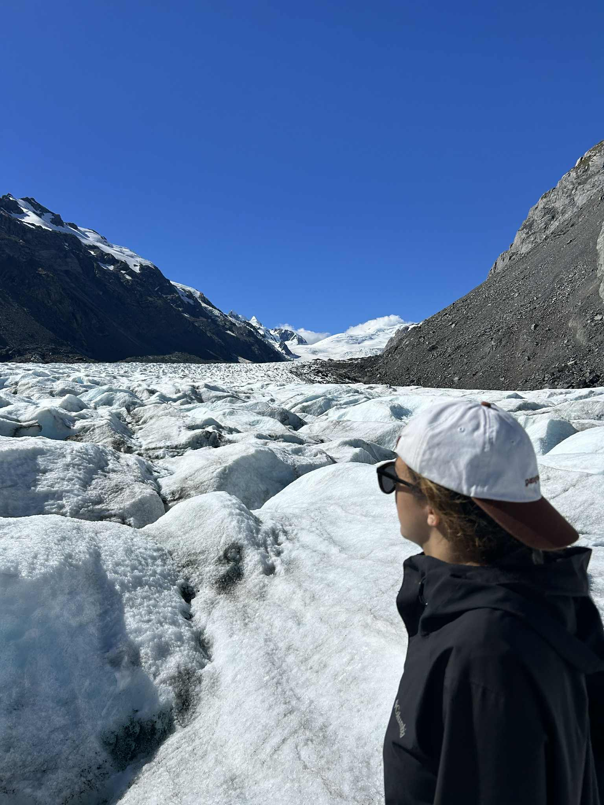
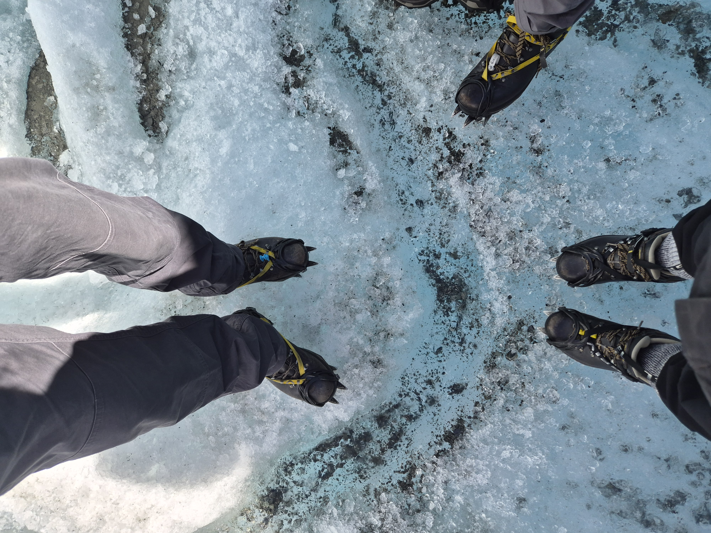
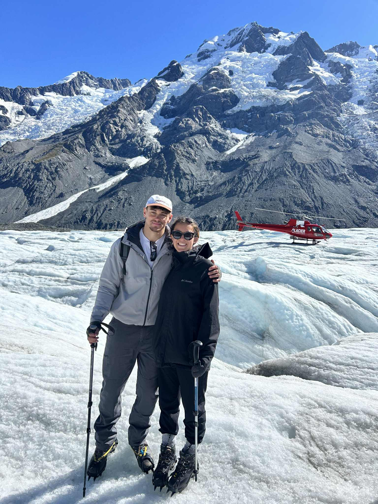
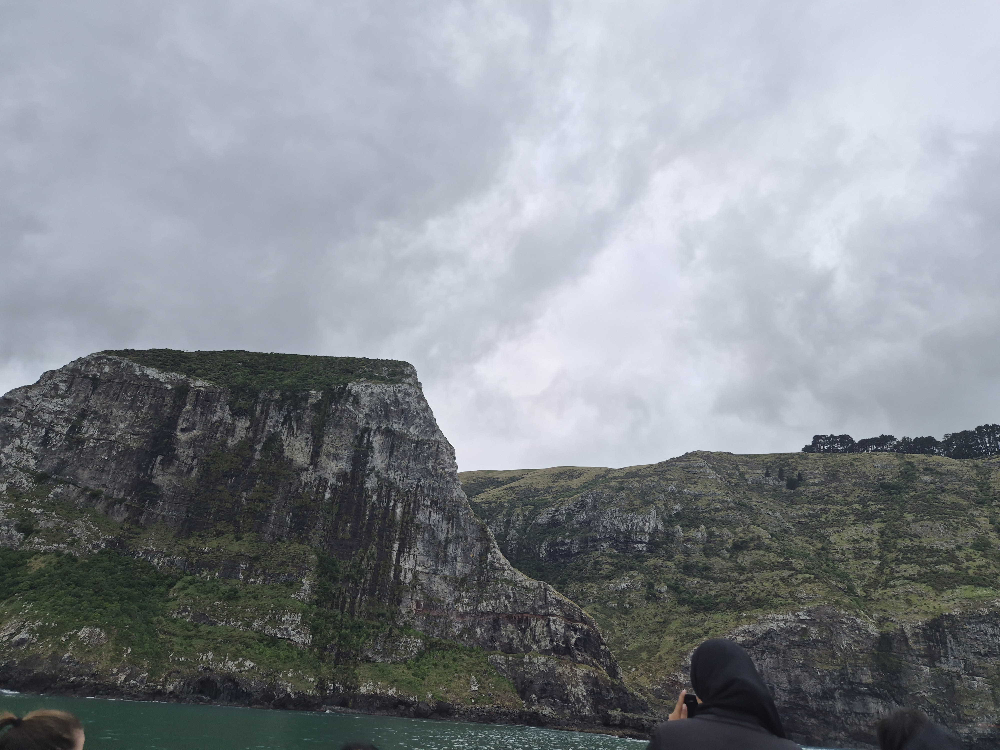
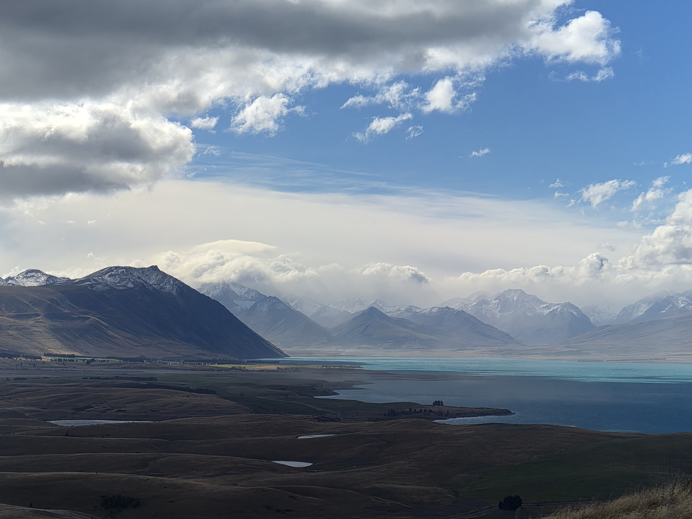
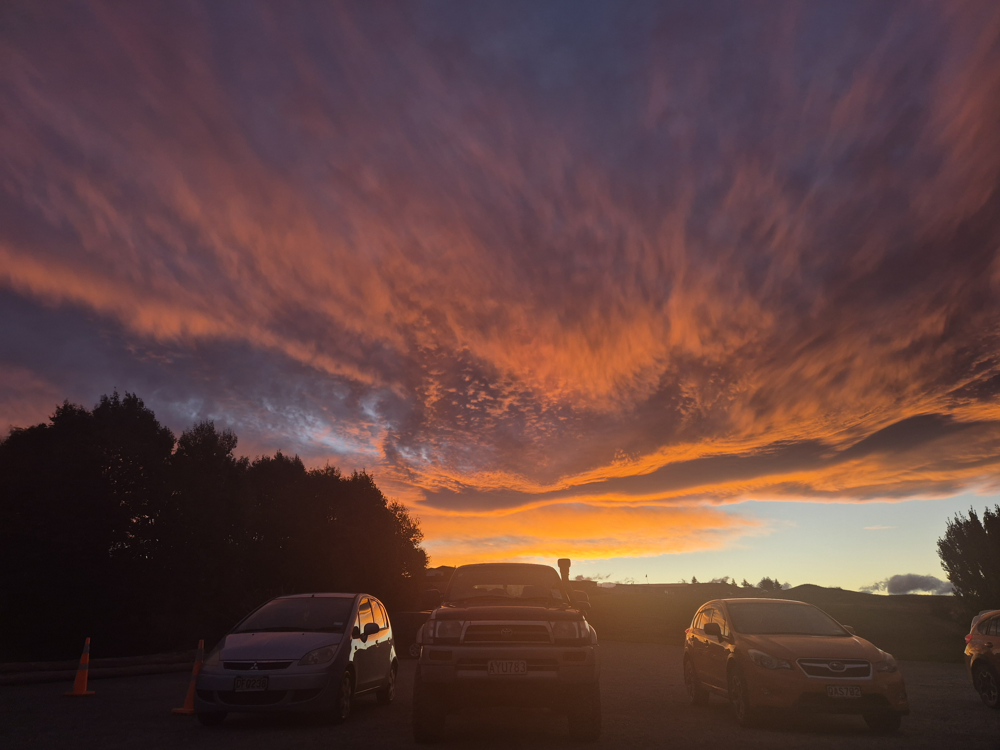

Last month or so in Tekapo and we managed to get 2 free helicopter rides! I have gone from never having been on a helicopter to 2 in one month. Am feeling very lucky. Helicopter 1 was part of a helihike experience. They fly you up to the glacier and you get crampons for your shoes (spikes for the ice) and some poles, and then a guide takes you on a wander around the glacier. He was telling us lots about their formation and current structure but I was very distracted. There are these holes that form sometimes due to water running and they form tunnels. We got to climb through them and the guide was very happy to film it. The helicopters are landing on the glacier all the time to drop off and pick-up people but we only had one oppertunity to take a photo with the helicopter so its a good job its a very nice one.



We also went to Akaroa which is a French town on the Christchurch penninsula. It was very scenic and we went on a dolphin cruise there. Akaroa has the smallest dolphins in the world called Hector's dolphins. On the boat they said we had to look for what looked like Mickey Mouse's ears in the water as they have a rounded dorsal fin. The boat wasn't too shaky but there were some people being sick, and some falling asleep. I took alot of travel sickness pills and I was ok. There was also free hot drink on the boat but we got them at the end so that we didn't miss the dolphins. We also managed to see some Albatros and some Fur Seals. The Christchurch penninsula and the water we were in used to be one massive volcano crater where one side eroded enough that the sea water came in and formed an inlet. You can see horizontal lines on the cliff that represent each eruption. In christchurch we also went to the hot pools on New Brighton Beach. The view reminded me of real Brighton as it was windy and the weather was bad.

Helicopter 2 was a suprise as part of our leaving party. We did some 4WD up the mountain to find the freshly fallen snow and have a snowball fight, and then when we came back down the helicopter arrived out of nowhere to take us across the lake to the airbnb on the other side of the lake. It was super cool and there was a rainbow that almost formed a full circle around us. It was funny to just get on the helicopter as when we did the helihike there was lots of safety talks about getting in and out of the helicopter but this time we just got shuffled in and out. Was really incredible to do it with my friends too as we all get headsets and mikes to talk to eachother up there. I did not use mine as I was scared to disturb the radio channel in case the pilot needed to tell us something.
And finally some lovely pictures. We got lots of rain and it was cold so some snow on top of the mountains now! Thanks for reading if you did, lots of info and not many photos this time.

